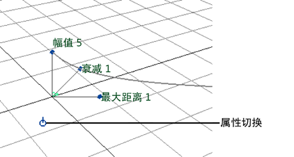

可以在工作区使用操纵器编辑最常用的场属性。操纵器提供了另一种在“属性编辑器”(Attribute Editor)中键入条目的交互式方法。
对某一属性使用操纵器
- 选择某个场。
- 从“常规”(General)工具架中选择“显示操纵器工具”(Show Manipulator Tool)。

属性操纵器显示在场图标的旁边（参见下图）。操纵器显示了“幅值”(Magnitude)、“衰减”(Attenuation)和“最大距离”(Max Distance)的名称和值。此外，还显示了以图表方式表示其值的曲线和直线。名称和图表始终朝向正面，便于看到。
并且，属性切换也在场旁边出现。如有必要，推拉切换按钮以获得更清晰的视图。对于大多数场，属性切换在能操纵的不同属性之间切换。（有些场只有一组可以操纵的属性，因此切换不会产生任何效果。）
- 将点拖动到属性的旁边来更改其值。
- 单击属性切换以显示不同的属性。
每次单击属性切换，会显示不同的属性。通常，拖动操纵器图标来更改属性值。使用操纵器图标包含了属性的特定信息。
操纵器和属性切换的颜色指示其处于活动状态。黄色表示处于活动状态，蓝色表示处于非活动状态。
多次单击属性开关之后，将看到一种显示模式，在该模式下，会显示所有操纵器图标，但不显示属性名称。在该模式下单击某个图标时，在它旁边会显示属性名称。然后，才可以操纵属性。再次单击属性，将会看到循环中显示的第一个操纵器：“幅值”(Magnitude)、“衰减”(Attenuation)和“最大距离”(Max Distance)。